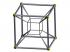

Mark Ireland +61 415 119 126 markincuba@hotmail.com
As well as being a web application developer
I am also an artist, owner/builder and statistician/researcher. I have
experience managing small teams of developers, designers and
programmers.
I have worked with record linkage, the design and analysis of surveys
and experiments, applied probability, computer simulation and
statistical programmimg. I have used Adobe ColdFusion, JSON (javascript
object notation), webservices, dynamic pdf generation, Crystal Reports,
MSQL, MySQL, Oracle, postgres gis, dBase and javascript libraries (like
jQuery) for web development and database programming. For statistical
programmimg I have used R, RStudio, Shiny, SAS, SPSS, AutoMatch and Excel.
My interests include improvised electronic music. If it sounds good on SoundCloud please download a higher quality version from BandCamp.
